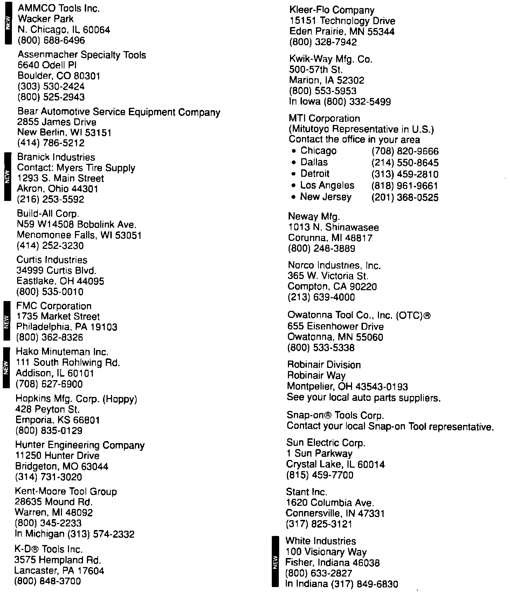

Tool and Equipment Sources

Included is a list of tool manufacturers and suppliers you may wish to contact.
The products, manufacturers, and suppliers referred to in this Service Bulletin are brought to the dealer's attention solely for the dealer's own information and investigation. American Honda disclaims any responsibility concerning these products. The information supplied is based on the manufacturer's representations.